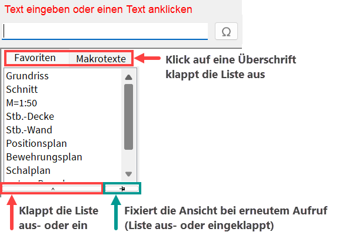

")
")

Alternativer Aufruf: mittlere Maustaste auf einen Text.
Schreiben von einzeiligen Texten. Wenn Sie längere, mehrzeilige Texte schreiben möchten, nutzen Sie die Funktion Textfeld.
1.Eingabemodus und Textdarstellung wählen
·Mit der Taste Einfg stellen Sie den Eingabemodus ein.
·Wählen Sie für den Text die Schriftart, Textgröße, Breitenfaktor, die Stiftnummer sowie die Textattribute.
Die Wahl der Stiftnummer ist bei Windows-Schriftarten nur für die Farbe von Bedeutung. Die Angaben können bis zum Absetzen des Textes (Schritt 4) im Funktionsbereich geändert werden.
2.Text eingeben
Bei der Texteingabe stehen Ihnen bis auf die Option (d) verschiedene Eingabe-Möglichkeiten zur Verfügung, die Sie miteinander kombinieren können.
Bestätigen Sie die Texteingabe abschließend mit der Eingabetaste.
a)Freie Texteingabe:
Geben Sie den Text in die Eingabezeile ein.
b)Favoritentext auswählen:
Unter der Abfrage können Sie aus einer Auswahlliste einen Favoritentext übernehmen. Klicken Sie einen Text an, um ihn an der Cursorposition einzufügen. Die angebotenen Favoritentexte können für die Funktionen [Texte | zeichn/ändern] in den Systemdaten definiert werden.
 |
c)Makrotext auswählen:
Klicken Sie auf die Überschrift Makrotexte, um sich die Liste anzeigen zu lassen. Klicken Sie einen Makrotext an. Der Makrotext wird in der Form {Makrotext} in die Eingabe übernommen. In der Zeichnung wird dieser nach dem Platzieren des Textes durch den tatsächlichen Inhalt ersetzt. Wenn Sie den Mauscursor über einen Makrotext in der Liste bewegen, wird Ihnen der Textinhalt als Tooltip angezeigt. Siehe auch: Verwenden von Makrotexten.
d)Text in die Eingabe übernehmen:
Klicken Sie einen auf der Zeichnung vorhandenen Text an, um diesen in die Eingabe zu übernehmen. Nach dem Anklicken des Textes gelangen Sie direkt zur Ausrichtung des Textes (Winkeleingabe). Texte in Textfeldern können nicht übernommen werden.
e)Sonderzeichen eingeben:
Klicken Sie rechts neben der Abfrage auf  . Geben Sie im Dialog die entsprechenden Sonderzeichen und ggf. weiteren Text ein. Bestätigen Sie entweder mit Weiter, dann gelangen Sie zur nächsten Abfrage, oder mit Zurück zur Texteingabe, dann können Sie zusätzlichen Text einfügen. Beachten Sie die Erläuterungen zum Einfügen von Sonderzeichen.
. Geben Sie im Dialog die entsprechenden Sonderzeichen und ggf. weiteren Text ein. Bestätigen Sie entweder mit Weiter, dann gelangen Sie zur nächsten Abfrage, oder mit Zurück zur Texteingabe, dann können Sie zusätzlichen Text einfügen. Beachten Sie die Erläuterungen zum Einfügen von Sonderzeichen.
f)Durchmesser eingeben:
Drücken Sie die Taste F10 (Standardeinstellung).
g)Hochzahlen eingeben:
Halten Sie die Strg-Taste gedrückt und drücken Sie die entsprechende Ziffer auf dem Nummernblock Ihrer Tastatur. Achten Sie darauf, dass der Nummernblock auf Ihrer Tastatur aktiviert ist (Taste: Num).
3.Winkel eingeben
§Geben Sie ein, unter welchem Winkel der Text abgelegt werden soll. [Winkel].
Sie können auch einen Winkel aus der Schnellauswahl wählen oder die Ausrichtungsoptionen P... (parallel) oder O... (orthogonal) für die Ausrichtung des Textes verwenden.

|


4.Lage bestimmen
Um die Textlänge vor dem Absetzen einem Referenzelement oder -abstand anzupassen, können Sie die Textlänge über Textgröße oder Breitenfaktor anpassen.
Nutzen Sie dazu die Schaltflächen unterhalb der Abfrage [Lage].

Anpassen der Textlänge über den Breitenfaktor, die Textgröße oder Referenzelemente und -abstände. Aktiv während der Abfrage [Lage]. 1.Abstand wählen (optional) Wenn die Textlänge geringer sein soll als das Referenzelement, können Sie ein Differenzmaß (Abstand) eingeben. Dieser Abstand wird zur linken und zur rechten Seite des Textes abgetragen. Öffnet den Dialog Textparameter. §Klicken Sie auf die Schaltfläche Abstand (z. B. 2.Anpassungsmodus wählen §Klicken Sie eine der folgenden Funktionen an, um zu bestimmen, ob die Textlänge anhand eines Breitenfaktors oder einer Textgröße angepasst werden soll.
3.Referenzart wählen §Wählen Sie eine der folgenden Funktionen, um die Textlänge zu bestimmen.
Sie können die Eingabe jederzeit abbrechen, indem Sie auf Abbruch klicken. Der Text wird am Cursor als Vorschau angehängt und die Zeichenmarke wird an den Punkt gesetzt, an dem der Text ausgerichtet wird. Wenn Sie Änderungen vornehmen möchten, können Sie die Schritte 1 - 3 unabhängig voneinander wiederholen, bevor Sie den Text absetzen. §Setzen Sie den Text mit Linksklick ab oder fahren Sie mit der Bearbeitung fort. [Lage]. Mit Rechtsklick wird der Text an die Position der Zeichenmarke gesetzt. |


§Klicken Sie eine der folgenden Funktionen im Funktionsbereich an, um zu bestimmen, wie der Text platziert werden soll. [Lage].
Achten Sie immer auf die Position der Zeichenmarke.
|
Text frei platzieren Führen Sie einen der folgenden Schritte aus: a)Setzen Sie den Text an einer beliebigen Stelle mit Linksklick ab. Die Zeichenmarke wird eine Zeile tiefer gesetzt. Danach kann mit der Eingabetaste jeder weitere Text eine Zeile tiefer platziert werden. b)Mit Rechtsklick oder der Eingabetaste wird der Text an die Stelle der Zeichenmarke gesetzt. Wenn mehrere Texte untereinander geschrieben werden sollen, können Sie nach der Texteingabe dreimal die Eingabetaste drücken, um den Winkel und die Lage zu bestätigen. |
|
Text in die nächste Zeile setzen Klicken Sie einen Text (Bezugstext) an, auf den der zu platzierende Text bezogen werden soll. [Welcher Text (Abbruch mit ESC)]. Führen Sie einen der folgenden Schritte aus [Lage]: a)Um den Text linksbündig zum Bezugselement an die Klickposition zu setzen, klicken Sie die linke Maustaste. Die Zeichenmarke wird eine Zeile tiefer gesetzt. b)Mit Rechtsklick oder Eingabetaste wird der Text oder das Textfeld an die Stelle der Zeichenmarke gesetzt. |
|
Text in dieselbe Zeile setzen Klicken Sie einen Text (Bezugstext) an, auf den der zu platzierende Text bezogen werden soll. [Welcher Text (Abbruch mit ESC)]. Führen Sie einen der folgenden Schritte aus [Lage]: a)Um den Text horizontal zum Bezugselement an die Klickposition zu setzen, klicken Sie die linke Maustaste. Die Zeichenmarke wird hinter den Text gesetzt. b)Mit Rechtsklick oder Eingabetaste wird der Text an die Stelle der Zeichenmarke gesetzt. |


Der Text wird den Angaben entsprechend auf der Zeichenoberfläche platziert.
Siehe auch:
·Unterstreichungen und Zeigerlinien hinzufügen
Zugehörige Referenzen: